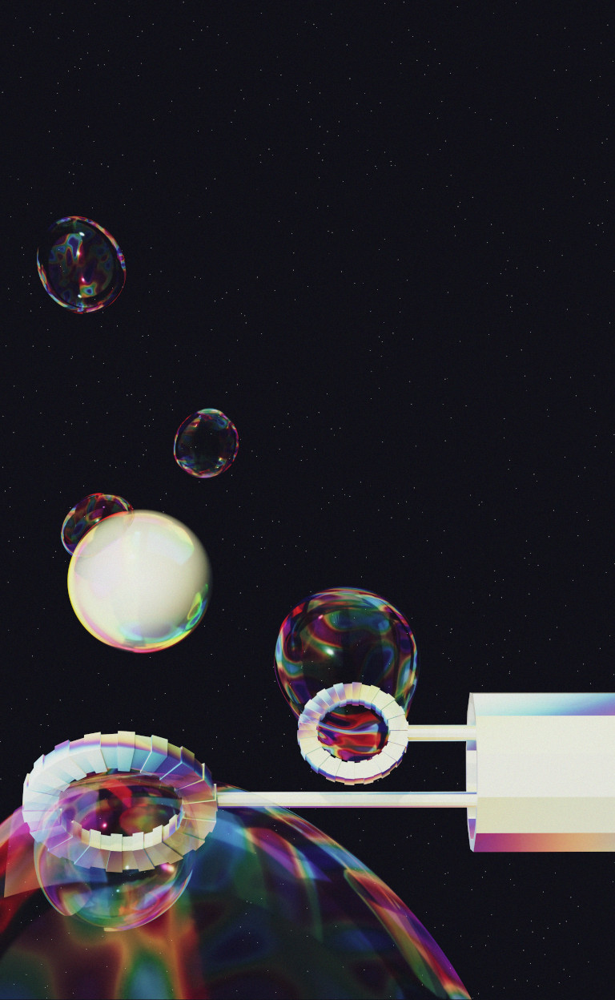
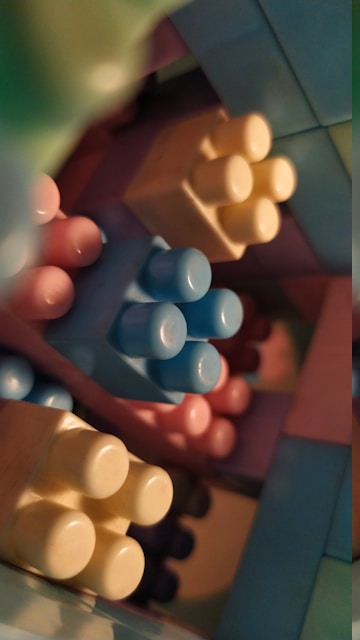

Open
Works seamlessly across platforms, clouds, and systems. Connect to cloud services, on-prem systems, APIs, message queues, databases, or custom endpoints. The platform speaks your language and adapts to your ecosystem — no need to conform to a rigid stack.
Engineered for real-time execution and scalable throughput. Event flows are processed as they happen. The platform supports asynchronous triggers, backpressure handling, and distributed execution to meet the demands of fast-moving systems.
Empower your engineers to automate safely and consistently. With built-in support for version-controlled workflows, audit trails, policy integration, and modular architecture, teams can build reliable automation without sacrificing control or visibility.
Define triggers, workflows, and conditions declaratively. Write, version, and audit your entire orchestration logic using standard development tools. From simple alerts to complex multi-step responses, everything is stored and deployed as code — enabling consistent, automated, and reviewable operations.

Bring your own tools, scripts, and runtimes. Use any language or executable interface to build event sources, processors, or responders. Whether it's a shell script, Python program, or compiled binary — if it runs, it integrates.

Design your infrastructure like building with blocks — intuitive, modular, and endlessly flexible. Define every component as code, integrate any system at any scale, and use your preferred tools and languages. Build fast, evolve freely, and stay in control.
Every outcome is deterministic, transparent, and cryptographically verifiable. No AI-driven ambiguity—just open logic, signed data, and reproducible processes. Designed for those who demand proof over promises.
[1]
A Scalable, event-driven
architecture for designing interactions across heterogeneous devices in
smart environments
Ovidiu-Andrei Schipor, Radu-Daniel Vatavu, Jean Vanderdonckt.
Information and Software Technology, Vol. 109 (2019), 43–59,
[2] The Power of Event-Driven
Architecture: Enabling RealTime Systems and Scalable Solutions
Adisheshu Reddy Kommera.
Turkish Journal of Computer and Mathematics Education, Vol. 11 (2020), 1740-1751,
[3] Exploring event-driven
architecture
in microservices- patterns, pitfalls and best practices
Chavan, Ashwin.
International Journal of Science and Research Archive, Vol. 4 (2021), 229-249,
See documentation for more references.
The MIT License provides freedom to use, modify, and integrate the software in any project — open source or commercial. With no copyleft, legal barriers, or hidden constraints, it enables building, scaling, and innovation on flexible terms.